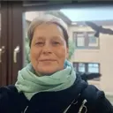
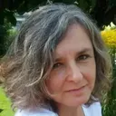
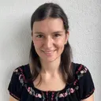

Fortbildung
Fortbildung
Autismus-Pädagogik
Begleite Kinder im Autismus-Spektrum sicher und kompetent. Diese Fortbildung gibt dir die Handlungssicherheit und das klare System für deinen anspruchsvollen Arbeitsalltag.
Nähere InfosStarte jetzt mit unseren praxisorientierten Fortbildungen und gewinne die Souveränität, die du für die Begleitung von Kindern im Autismus-Spektrum und mit AD(H)S brauchst.
Ein Kind hält sich die Ohren zu und zieht sich zurück. Ein anderes steht nach jeder Anweisung ratlos da oder explodiert, wenn der Bauklotzturm einstürzt. Du möchtest Kindern im Autismus-Spektrum und mit AD(H)S die bestmögliche Unterstützung geben, doch die gelernten Methoden greifen in der Praxis oft nicht so, wie du es dir erhoffst.
Wenn du als pädagogische Fachkraft, Lehrkraft, Schulbegleitung oder Therapeut:in nach einem klaren System und praxiserprobten Werkzeugen suchst, die wirklich einen Unterschied machen, bist du bei uns genau richtig.

Ein praxiserprobtes System statt einzelner Tipps, das dich Schritt für Schritt zu echter Handlungssicherheit bringt.
Entwickelt von einem Praktiker, der seit 2015 täglich Kinder und Jugendliche an Schulen begleitet.
Persönliche Begleitung im Praxis-Stammtisch alle 3 Wochen, mit Enno direkt dabei.
Lebenslanger Zugang und eine Gemeinschaft, die auch nach der Fortbildung bleibt.
Platzhalter Google-Bewertungen: Hier sitzt auf der echten Seite das Bewertungs-Widget (TrustIndex). Es wird nach der Zustimmung im Cookie-Banner geladen und kommt beim Umzug mit dem Banner zusammen dazu.
Fortbildung
Begleite Kinder im Autismus-Spektrum sicher und kompetent. Diese Fortbildung gibt dir die Handlungssicherheit und das klare System für deinen anspruchsvollen Arbeitsalltag.
Nähere Infos Fortbildung
Fortbildung
Verwandle tägliche Reibung in erfolgreiche Lernmomente. Diese Fortbildung gibt dir die praxiserprobten Strategien, um Fokus zu fördern und Impulse gezielt zu lenken.
Nähere InfosHallo, ich bin Enno Eirich, Gründer der Akademie Neurodiversität.
In mehr als einem Jahrzehnt Praxiserfahrung habe ich eines immer wieder erlebt: Engagierte Fachkräfte stoßen an ihre Grenzen, weil die Lücke zwischen Theorie und dem anspruchsvollen Alltag riesig ist.
Genau um diese Lücke zu schließen, wurde die Akademie gegründet. Unsere Mission ist es, dir praxiserprobte Werkzeuge und ein klares System zu geben, damit du wieder mit Sicherheit, Kompetenz und Souveränität arbeiten kannst.
Mehr über Enno
Was Fachkräfte aus ganz unterschiedlichen Bereichen über die Fortbildungen sagen.

Fundiertes Fachwissen für meinen Sohn und meine Kindergartenkinder.
Nachdem mein Sohn die Diagnose AD(H)S bekommen hatte, konnte ich sein Verhalten zwar besser einordnen, aber ich verstand noch nicht, warum ihm so viele Dinge schwerfallen. Die Fortbildung AD(H)S-Pädagogik hat mir die neurobiologischen Grundlagen auf sehr hohem Niveau und mit vielen praxisnahen Beispielen näher gebracht. Heute kann ich auf fundiertes Fachwissen zurückgreifen und es in der Praxis umsetzen. Davon profitieren nicht nur mein Sohn, meine Familie und ich, sondern als Elementarpädagogin auch die Kindergartenkinder und ihre Eltern, die ich begleite.

Fachlich interessant und persönlich wertvoll.
Ich hatte mich schon viel mit Autismus beschäftigt und wollte das Thema einmal aus einer anderen Perspektive betrachten. Besonders gefallen hat mir, dass ich mir die Zeit nehmen konnte, die ich gebraucht habe: ein Video anschauen, ein Kapitel bearbeiten, darüber nachdenken und manchmal auch wieder zurückgehen. Mit jedem Kapitel ist mein Vertrauen in die Akademie gewachsen, und ich habe mich von Anfang an wohlgefühlt. Gerade die Reflexion meines eigenen Falls hat mich dazu gebracht, genauer hinzuschauen und liebevoller mit mir selbst umzugehen. Für mich war die Fortbildung fachlich interessant und zugleich eine persönliche Erfahrung, die ich nicht missen möchte.

Mehr Wissen, Sicherheit und Verständnis im Umgang mit Kindern.
Die Fortbildung Autismus-Pädagogik hat mir vor allem mehr Wissen, Sicherheit und Verständnis im Umgang mit Kindern gegeben. Als Schulassistentin und durch meine vorherige Erfahrung im Kindergarten konnte ich viele Inhalte direkt mit meinem Alltag verbinden. Ich habe gelernt, Verhaltensweisen besser zu verstehen, genauer hinzuschauen und die individuellen Bedürfnisse und Stärken eines Kindes bewusster wahrzunehmen. Besonders wertvoll ist für mich, Kinder im Autismus-Spektrum nicht nur bei ihren Schwierigkeiten zu unterstützen, sondern ihre Fähigkeiten und Ressourcen in den Mittelpunkt zu stellen. Für meine weitere Arbeit nehme ich neues Fachwissen, mehr Selbstvertrauen und konkrete Ideen für die Praxis mit.
Wertvolle und vor allem wertschätzende Tipps.
Es war wirklich eine ganz tolle Fortbildung – mit tollen Inhalten und wertvollen, vor allem wertschätzenden Tipps. Auch die Lernplattform und die Community haben mich begeistert. Als Erzieherin und Inklusionsfachkraft in einer Kita werde ich auf jeden Fall weiterhin an den Praxis-Stammtischen teilnehmen und das große Fachwissen der Community in Anspruch nehmen. Absolut verdiente 5 Sterne!
Kleine Veränderungen haben viel bewirkt und mir Sicherheit gegeben.
Als Mutter eines Kindes im Autismus-Spektrum mit intensivem medizinischem Hintergrund ist unser Alltag oft herausfordernd. Durch die Fortbildung Autismus-Pädagogik habe ich viele Verhaltensweisen und Bedürfnisse meines Kindes besser verstehen gelernt. Besonders hilfreich waren die praxisnahen Impulse und der wertschätzende Blick auf Autismus. Kleine Veränderungen haben bereits viel bewirkt und mir mehr Sicherheit gegeben. Ich kann die Fortbildung von Herzen allen Eltern und Fachkräften empfehlen, die Menschen im Autismus-Spektrum besser verstehen und begleiten möchten.

Verhalten verstehen statt bewerten – das hat meine Haltung verändert.
Vor der Fortbildung Autismus-Pädagogik hatte ich noch keine praktische Erfahrung in der Begleitung von Kindern im Autismus-Spektrum – durch eine neue Wohngruppe mit Schwerpunkt Neurodiversität eröffnete sich mir ein ganz neues Aufgabenfeld. Besonders überzeugt haben mich der strukturierte Aufbau, die umfangreichen Lernmaterialien und die anschaulichen Lernvideos zu allen Modulen. Ein echtes Highlight sind für mich die Praxis-Stammtische, bei denen wir aktuelle Fallbeispiele gemeinsam besprechen – dass der Zugang dauerhaft bestehen bleibt, ist ein großer Mehrwert. Die Fortbildung hat meine pädagogische Haltung nachhaltig verändert: Ich habe gelernt, Verhalten nicht vorschnell zu bewerten, sondern die Bedürfnisse dahinter zu erkennen. Als Erzieherin kann ich Kinder heute noch individueller und ressourcenorientierter begleiten.

Hat mich in meiner Arbeit als Heilpädagogin sehr bestärkt.
Ich konnte viele Themen nochmals vertiefen, aber auch Neues dazulernen. Die einzelnen Module waren sehr gut strukturiert und für mich als dreifache berufstätige Mutter im Alltag gut zu bewältigen. In den Live Calls hat sich Enno allen Fragen und Themen mit sehr viel Professionalität und Empathie angenommen und man fühlte sich immer sehr gut begleitet! Die Weiterbildung bei Enno kann ich allen empfehlen, die sich mit dem Thema Neurodiversität auseinandersetzen und fundiertes Wissen darüber erlangen möchten!

Nicht Druck verändert Verhalten, sondern Verständnis und Beziehung.
Als Pädagoge und Vater eines Kindes mit AD(H)S kannte ich vieles bereits – trotzdem hat mir die Fortbildung einen völlig neuen Blick eröffnet. Das Gelernte konnte ich sofort im Familienalltag umsetzen: Aus der täglichen Belastung rund um die Medikamenteneinnahme wurde eine entspannte, selbstständige Morgenroutine. Meine wichtigste Erkenntnis: Nicht Druck verändert Verhalten, sondern Verständnis und Beziehung.

Genau das Richtige – Gelerntes direkt anwenden.
Die Fortbildung passt für mich perfekt. Ich lerne in meinem Tempo und kann das Gelernte schon am nächsten Tag in meiner Klasse einsetzen. Genau diese Verbindung von Theorie und Praxis habe ich gesucht.

Professionell, zugewandt, effektiv und netzwerkorientiert
Ich habe schon viele Fortbildungen gemacht – keine war so gut strukturiert wie die Fortbildung Autismus-Pädagogik. Die Möglichkeit, alle Inhalte im eigenen Tempo zu erarbeiten und bei Fragen jederzeit in den Praxis-Stammtischen Antworten zu bekommen, halte ich für ideal. Mit der Aussicht auf eine stetig wachsende Gruppe, die sich regelmäßig austauscht, gehe ich beruhigt in meinen Arbeitsalltag als Sonderpädagoge.

Eine echte Bereicherung – Danke für diesen Weg!
Als selbstständige Unternehmerin hat mich die Fortbildung Autismus-Pädagogik sofort angesprochen. Das flexible Format ermöglicht es mir, die Inhalte in meinem eigenen Tempo zu erarbeiten und gleichzeitig von den regelmäßigen Online-Meetings zu profitieren. Besonders wertvoll sind die Fallbesprechungen und die Möglichkeit, offene Fragen direkt einzubringen. Der wertschätzende Umgang in der Gemeinschaft und Ennos umfangreiche Praxiserfahrung haben die Fortbildung zu einer echten Bereicherung gemacht.
Danke für diesen spannenden gemeinsamen Weg!
Jeden Cent wert – eine klasse Fortbildung!
Als Erzieherin mit heilpädagogischer Zusatzqualifikation und Integrationsfachkraft war die Fortbildung Autismus-Pädagogik meine erste große Online-Fortbildung – und ein echter Gewinn. Der theoretische Umfang ist enorm, aber dem vielschichtigen Thema absolut angemessen, und die freie Zeiteinteilung ließ sich gut mit meinem Berufsalltag vereinbaren. Besonders wertvoll war die bunte Mischung der Teilnehmenden – von Therapeut:innen über Lehrkräfte bis hin zu Eltern und Großeltern –, wodurch ich durch die praxisnahen Fallbesprechungen einen ganzheitlichen Blick auf die Thematik gewonnen habe.
Die Praxis-Stammtische waren methodisch abwechslungsreich und gut organisiert, und dank des lebenslangen Zugriffs auf alle Materialien war der Gesamtaufwand von rund 80 Stunden gut investierte Zeit.

Verhalten verstehen statt vorschnell zu bewerten.
Vor der Fortbildung fiel es mir oft schwer, Verhaltensweisen meiner Schüler:innen richtig einzuordnen – gerade bei Überforderung, Rückzug oder Eskalation. Heute deute ich solches Verhalten nicht mehr vorschnell als „Verweigerung“, sondern verstehe es aus der Perspektive von Stress, Reizverarbeitung und Selbstregulation. So begleite ich Kinder im Autismus-Spektrum mit deutlich mehr Handlungssicherheit und achte genauer auf die Passung zwischen Kind und Umfeld.

Individuell verstehen, individuell begleiten.
Ich konnte viele Inhalte direkt im Alltag umsetzen und habe ein besseres Verständnis für die Bedürfnisse der Kinder entwickelt. Besonders die Praxis-Stammtische mit Enno waren sehr hilfreich – sie ermöglichen einen offenen, praxisnahen Austausch. Insgesamt hat mich die Fortbildung fachlich wie persönlich weitergebracht.

Einzigartige Unterstützung durch Community und Dozenten.
Ich kann die Fortbildung von ganzem Herzen weiterempfehlen. Die regelmäßigen Praxis-Stammtische schaffen Kontinuität und haben mich immer wieder zurück zu den Lerninhalten geführt, wenn ich den Spagat zwischen Beruf, Familie und Fortbildung einmal nicht so gut geschafft habe. Gerade als Oma eines Kindes im Autismus-Spektrum war mir dieser Rückhalt besonders wichtig.

Klare Inhalte, mein Tempo – passt in meinen Alltag.
Die Fortbildung war für mich sehr wertvoll. Am hilfreichsten fand ich, dass ich flexibel in meinem eigenen Rhythmus lernen konnte. Auch dass die Inhalte gut verständlich aufbereitet sind, hat mir den Einstieg sehr erleichtert.

Wissen auffrischen und Neues lernen – perfekt für die Praxis.
Für mich war es eine gute Mischung: bereits Vorhandenes festigen und vieles dazulernen. Die Module waren klar, strukturiert und verständlich aufgebaut. Die Fortbildung ist interessant, kurzweilig und lebendig gestaltet – und gibt viel Input für die Praxis.
Ein echter Augenöffner – praxisnah und fachlich fundiert.
Die Fortbildung hat mein Verständnis für Autismus deutlich vertieft und mir viele praxisnahe Impulse für meine Arbeit als Beratungs- und Förderlehrkraft gegeben. Besonders das Modul „Komorbiditäten und herausforderndes Verhalten“ hat mir neue Perspektiven eröffnet. Die Schritt-für-Schritt-Struktur hilft, das Wissen systematisch aufzubauen und mit dem eigenen Erfahrungsschatz abzugleichen.

Selbstsicherer und handlungskompetenter in der Praxis.
Die Fortbildung war sehr lehrreich und interessant gestaltet. Besonders positiv fand ich die Möglichkeit, im eigenen Tempo zu lernen; die detaillierten Handouts unterstützen den Lernprozess zusätzlich. Einige Strategien – etwa das gezielte Nutzen von Interessen zur Motivation oder ein Notfallplan – konnte ich unmittelbar in die Praxis umsetzen.
Flexibel, praxisnah und fachlich auf höchstem Niveau.
Die Fortbildung war sehr gut strukturiert und klar gegliedert. Besonders geschätzt habe ich, die Videos selbstständig im eigenen Tempo bearbeiten zu können – unabhängig von Uhrzeit und Alltag und wunderbar in meinen Berufsalltag integrierbar. Die Betreuung war professionell, das Expertenwissen wird auf hohem Niveau und zugleich verständlich vermittelt; die Praxis-Stammtische zur Fallbesprechung sind eine echte Bereicherung.

Ein respektvoller, ressourcenorientierter Umgang mit dem Thema.
Die Fortbildung hat mich fachlich und persönlich sehr bereichert. Ich habe ein deutlich tieferes Verständnis für Menschen im Autismus-Spektrum gewonnen und viele Denkanstöße erhalten, die meinen pädagogischen Blick nachhaltig verändert haben. Besonders die praxisnahen Beispiele nehme ich mit – ich würde es jederzeit wieder machen.
Direkt einsetzbar – auch in der tiergestützten Arbeit.
Eine sehr informative und praxisnahe Fortbildung, die mir großen Spaß gemacht hat. Sie hat meine Sichtweise und Haltung gegenüber Menschen im Autismus-Spektrum nachhaltig verändert. Besonders bereichernd sind die regelmäßigen Praxis-Stammtische mit ihren Fallbeispielen – sie runden das Angebot perfekt ab.

Bereicherndes Wissen – für Beruf und Familie.
Sowohl in meiner pädagogischen Arbeit mit Kindern und Jugendlichen als auch im Umgang mit meinen eigenen autistischen Kindern konnte ich viele wertvolle Impulse mitnehmen. Trotz meiner bisherigen Erfahrung habe ich viel Neues dazugelernt. Die Praxis-Stammtische bieten eine tolle Möglichkeit zum Austausch und zur Vernetzung.

Sofort umsetzbar – und goldwert.
Die Fortbildung beinhaltet immens viel Wissen, bedacht aufgeteilt. Neben der Praxis konnte ich mir viel aneignen und gleich anwenden – das hat mir einen großen Handlungsspielraum in der Begleitung von Autist:innen eröffnet. Besonders hervorzuheben sind Ennos wohlwollende Haltung und seine Alltagsbeispiele, die das fundierte theoretische Wissen bereichern; der lebenslange Zugriff ist für mich unbezahlbar.
Detaillierte Handouts – heute noch mein Nachschlagewerk.
Die Fortbildung habe ich als sehr bereichernd erlebt. Besonders wertvoll fand ich, dass ich die Inhalte selbstständig erarbeiten und mein Lerntempo selbst bestimmen konnte. Der regelmäßige Austausch in den Praxis-Stammtischen eröffnet neue Perspektiven – insgesamt fühle ich mich fachlich wie persönlich gestärkt.

Du tippst „Autismus Fortbildung“ in die Suchmaschine und bekommst eine lange Liste. Tagesseminare, Online-Kurse, Lehrgänge über mehrere Monate …
Weiterlesen
Ein Kind startet dreimal in dieselbe Aufgabe und kommt nie über den ersten Satz hinaus. Ein anderes ruft die Antwort in die Runde …
Weiterlesen
Ein Kind kramt zum dritten Mal in der Federmappe, obwohl die Aufgabe längst erklärt ist. Ein anderes steht mitten im Rechenweg auf …
Weiterlesen
Jede große Veränderung beginnt mit dem ersten, konkreten Schritt. Gewinne sofort an Sicherheit – mit unseren praxiserprobten Strategien für Autismus oder den entscheidenden Schlüsseln zum Verständnis von AD(H)S. Wähle jetzt die Soforthilfe, die du für deinen Alltag brauchst.